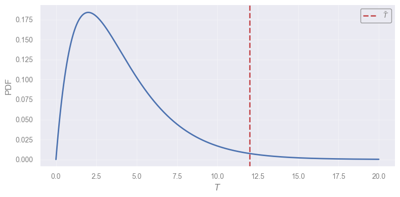
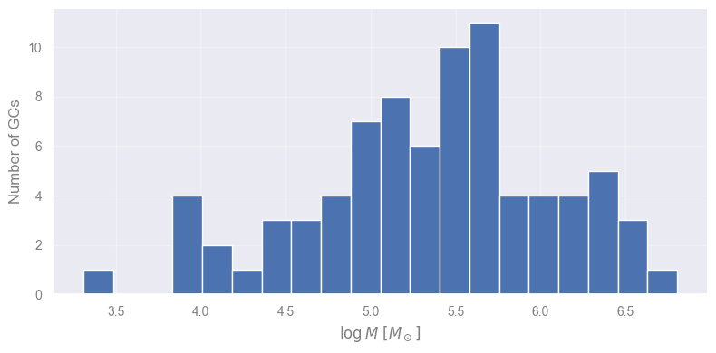
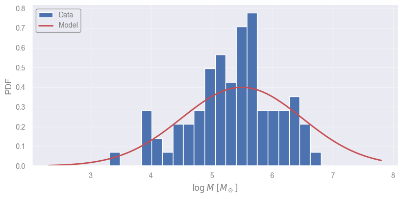
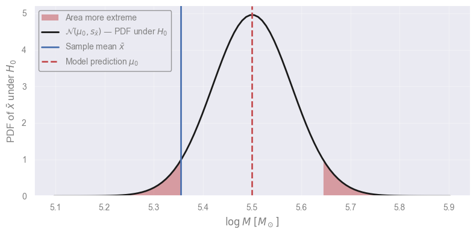
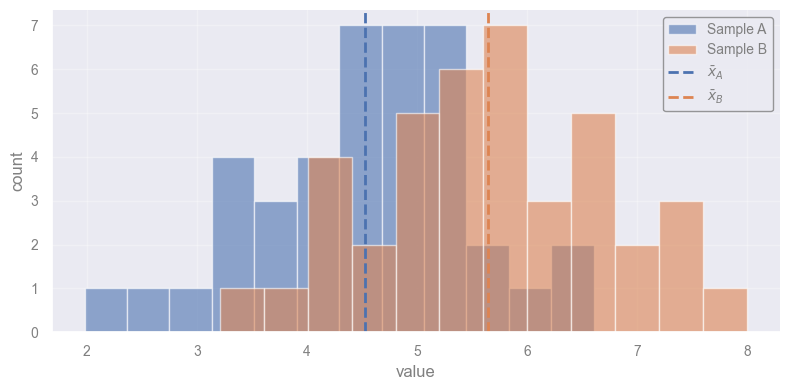
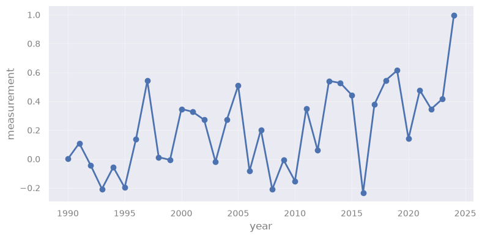
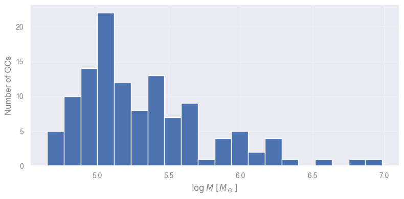
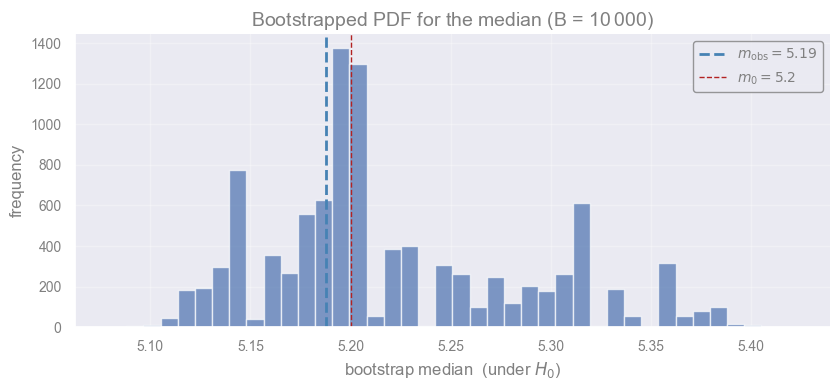
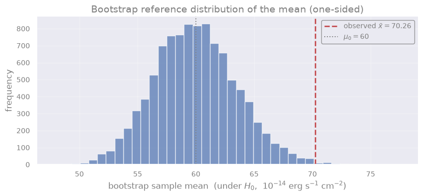

Hypothesis Testing #
In this notebook we will see:
the hypothesis testing framework: \(H_0\), significance level \(\alpha\), test statistic, \(p\)-value, decision,
common tests ready to use off-the-shelf: z-test, t-test, Kolmogorov–Smirnov, Mann–Kendall,
the bootstrap, to build the PDF of the statistic when no theoretical one is available,
what we can — and cannot — conclude from a test and its \(p\)-value.
Setup#
#!pip install pymannkendall --quiet
import requests
url = "https://raw.githubusercontent.com/AstroStat-Academy/assets-public/main/colab/clone_and_cd_colab.py"
colab = requests.get(url).text
exec(colab)
Running locally, skipping Colab setup.
import requests
url = "https://raw.githubusercontent.com/AstroStat-Academy/assets-public/main/styles/plot_style.py"
style = requests.get(url).text
exec(style)
Imported matplotlib.
Imported seaborn.
Plotting style set.
Preamble#
Q: If we have a statistic \(T\) distributed as in the plot below, how can we calculate the probability of obtaining a value as large as \(\bar{T}\) or larger?
import numpy as np
from scipy import stats
import matplotlib.pyplot as plt
# A distribution bounded at 0 and unbounded for large T (e.g. a chi-square shape)
T_dist = stats.chi2(df=4)
T_plot = np.linspace(0, 20, 300)
pdf_plot = T_dist.pdf(T_plot)
T_bar = 12.0 # the observed value we mark on the plot
plt.plot(T_plot, pdf_plot, "C0", lw=2)
plt.axvline(T_bar, ls="--", lw=2, color="C3", label=r"$\bar{T}$")
plt.xlabel("$T$")
plt.ylabel("PDF")
plt.legend(loc="upper right")
plt.show()

A step-by-step case to build intuition#
A hypothesis test evaluates whether the observed sample
\(\dots\) is compatible with a hypothesis about a model
\(\dots\) representing the unknown data-generating process.
Let us use a practical scenario to build an intuition about how Hypothesis Testing works.
The sample#
A research team has studied a sample of Globular Clusters (GCs) and measured their masses.
PS: We will work in log-scale.
import numpy as np
import pandas as pd
from scipy import stats
df_masses = pd.read_csv("data/GC_masses.csv", header=None, names=["mass"])
# Extract the data as a numpy array, in log-scale
X = np.log10(df_masses["mass"].to_numpy())
plt.hist(X, bins=20)
plt.xlabel(r"$\log M\ [M_\odot]$")
plt.ylabel("Number of GCs")
plt.show()

The model#
Globis & Clusterton (2022) suggest a model described by a normal distribution:
peaking at \(\mu_0 = 5.5\).
Let’s overplot the model on the data for a quick comparison.
mu_0 = 5.5
std_0 = 1.0
logm_for_plot = np.linspace(min(X)-1, max(X)+1, 100)
model_prob_for_plot = stats.norm(mu_0, std_0).pdf(logm_for_plot)
plt.hist(X, bins=20, density=True, label="Data")
plt.plot(logm_for_plot, model_prob_for_plot, "r-", lw=2, label="Model")
plt.xlabel(r"$\log M\ [M_\odot]$")
plt.ylabel("PDF")
plt.legend(loc="upper left")
plt.show()

The property#
Q: The model and the data look similar. Is this enough to say they are compatible?
A: No \(\rightarrow\) we must translate it into a measurable quantity: a model property that we can also estimate from the data, and then compare.
Let’s go simple \(\rightarrow\) We use the location of the peak — the mean \(\mu\).
In this case, the property we investigate is a parameter.
But, in principle, we may use any property we can think of — e.g.:
the location of the peak of the model (to be compared with that of the data)
the height of the peak (to be compared with that of the data)
the shape of the model (to be compared with that of the data)
etc.
The hypothesis#
The authors propose the hypothesis:
GC formation in galaxies (the data-generating process) produces masses whose distribution (described by our model) has an average equal to 5.5.
Or, equivalently:
The true mean \(\mu\) of the GC distribution equals the model value \(\mu_0\):
\(H_0:\mu=\mu_0.\)
The statistic#
We cannot measure \(\mu\) on the population \(\rightarrow\) We now need a statistic on the sample to verify the claim.
We will use the sample mean:
Here, \(\bar{x}\) serves as a replacement of the unknown \(\mu\).
So, to summarize:
Data-generating process |
GC formation in real galaxies |
Hypothesis |
The population has mean \(\mu\) equal to \(\mu_0 = 5.5\) |
Statistic to probe the claim |
The sample mean \(\bar{x}\) |
Evaluating the statistic#
We shall now calculate \(\bar{x}\) and compare against \(\mu_0\).
x_bar = np.mean(X)
print(f"MODEL: mu_0 = {mu_0:.1f}")
print(f"SAMPLE: x_bar = {x_bar:.2f}")
MODEL: mu_0 = 5.5
SAMPLE: x_bar = 5.35
We shall check whether:
\(\mu_0\) very different from \(\bar{x}\) \(\rightarrow\) reject the hypothesis that the data were generated by the model
\(\mu_0\) similar to \(\bar{x}\) \(\rightarrow\) we discuss this later …
We need the Probability Distribution Function (PDF) of the test statistic.
If we know the PDF of the statistic, we can calculate probabilities — In our example, we can calculate the probability of:
Having measured a sample’s \(\bar{x}\) if the expectation is \(\mu_0 = 5.5\)
Building the statistic’s PDF#
We can build the PDF of the statistic if we consider the implicit assumptions:
Assumption that the data are i.i.d..
Assumption, under \(H_0\), that the model describes the data-generating process.
Assumptions have implications we can exploit.
Assumption 1 implies, via the Central Limit Theorem, that the PDF of \(\bar{x}\) is a Gaussian:
\[\bar{x} \sim \mathcal{N}(\mu_{\bar{x}}, \sigma_{\bar{x}})\]Assumption 2 implies that the Gaussian shall be centered on \(\mu_0\) \(\rightarrow\) \(\mu_{\bar{x}} = \mu_0\).
Q: Ok, but what about \(\sigma_{\bar{x}}\)?
A: We can estimate it with the standard error of the mean, \(s_{\bar{x}}\).
Therefore the PDF for \(\bar{x}\), under \(H_0\), is:
With the PDF at hand, calculating the probability of observing the measured \(\bar{x}\) is just the integral of the extremes:
s_x_bar = stats.sem(X)
diff = abs(x_bar - mu_0)
x_plot = np.linspace(mu_0 - 5 * s_x_bar, mu_0 + 5 * s_x_bar, 100)
xx_before = np.linspace(mu_0 - 5 * s_x_bar, mu_0 - diff, 100)
xx_after = np.linspace(mu_0 + diff, mu_0 + 5 * s_x_bar, 100)
null_distribution = stats.norm(mu_0, s_x_bar)
y_plot = null_distribution.pdf(x_plot)
plt.fill_between(xx_before, null_distribution.pdf(xx_before), 0, color="r", ec="none", alpha=0.5, label="Area more extreme")
plt.fill_between(xx_after, null_distribution.pdf(xx_after), 0, color="r", ec="none", alpha=0.5)
plt.plot(x_plot, y_plot, "k-", lw=2, label=r"$\mathcal{N}(\mu_0, s_{\bar{x}})$ — PDF under $H_0$")
plt.axvline(x_bar, ls="-", color="b", label=r"Sample mean $\bar{x}$")
plt.axvline(mu_0, ls="--", lw=2, color="r", label=r"Model prediction $\mu_0$")
plt.legend(loc="upper left")
plt.ylim(ymin=0.0)
plt.xlabel(r"$\log M\ [M_\odot]$")
plt.ylabel(r"PDF of $\bar{x}$ under $H_0$")
plt.show()

area_more_extreme = 1 - (null_distribution.cdf(mu_0+diff) - null_distribution.cdf(mu_0-diff))
print(f"Area more extreme — p: {area_more_extreme:.4f}")
Area more extreme — p: 0.0716
NOTE: We consider both wings because we want to test both a very large and a very low value for \(\bar{x}\).
One/Two-sided tests:
Two-sided test asks is the parameter different?
One-sided test asks is the parameter larger / smaller?
What is this probability?#
p-value
The probability, under \(H_0\), of observing a test statistic at least as extreme as the one actually measured
i.e. the area under the PDF (assumed true under \(H_0\)) that lies at least as far from \(\mu_0\) as the observed value.
Equivalently:
How surprising the data is, in a world where the model is true.
The smaller this number, the more safely we can reject the model.
Thresholding & Decision#
We found a \(p\)-value of 0.07 — if the model were true, data this extreme would occur only \(\sim 7\%\) of the time.
Q: Can we risk it?
A: It is our choice to consider our “threshold” or significance level \(\alpha\)!
If we had decided before looking at the data to use a 5% threshold, then our conclusion would be:
“We do not reject the model, with a significance level of 5%”
Choosing the significance level
There is no rule \(\rightarrow\) Just that it should be decided before the analysis.
This is to avoid biasing our conclusions by:
relaxing our criteria for models that we like, or
making it harder for models that we don’t like.
In Astronomy, \(2 + 2 \simeq 5\), so we often use 0.5, 1 or 5%. In Nuclear Physics and precision experiments often \(10^{-7}\) or \(10^{-10}\) are used!
The Hypothesis Testing Framework#
Let's formalize what we learnt
Hypothesis Testing answers the following:
Is the observed data compatible with a claim about a model, or unusual enough that we should reject it?
\(\dots\) while keeping the probability of falsely rejecting bounded by a level \(\alpha\) chosen up front.
The whole process is outlined as follows:
Step 1: Define the null hypothesis (\(H_0\)).
Step 2: Decide on a significance level \(\alpha\) that we are comfortable with.
Step 3: Pick the statistic and corresponding PDF under \(H_0\).
Step 4: Compute the \(p\)-value.
Step 5: Decision.
Step 1. Null and Alternative Hypothesis#
Any test starts with 2 mutually-exclusive statements about the world.
\(H_{0}\): Null Hypothesis; encodes the status quo — the claim we are willing to keep if the data does not strongly contradict it.
\(H_{1}\): Alternative Hypothesis; encodes the challenger — the claim we accept only if the data points clearly away from \(H_{0}\).
The test is conservative: \(H_{0}\) is innocent until proven guilty.
\(\rightarrow\) Pick the null so that incorrectly rejecting it is the more expensive mistake.
Examples:
If you are evaluating a new detection pipeline against the standard one:
\(H_0\) should be \(\rightarrow\) “the new pipeline does not perform better than the standard one”
(You do not want to adopt a pipeline that is actually worse)
If you are evaluating whether a telescope’s calibration has drifted:
\(H_0\) should be \(\rightarrow\) “the calibration has not drifted”
(You do not want to falsely flag good data as unreliable)
Step 2. Decide on a significance level#
This is the false-alarm rate we accept: if \(H_0\) were true, our procedure would wrongly reject it in a fraction \(\alpha\) of experiments.
E.g., a significance level of \(5\%\), i.e. \(\alpha = 0.05\).
Step 3. Pick the statistic#
Pick a sample statistic that can measure the property under claim.
E.g., the sample mean for the location of the central value.
Step 4. Compute the \(p\)-value#
Use the integral on the statistic’s PDF:

Figure 1. Critical value and corresponding p-value for a two-tailed test, meaning that we want to quantify how extreme the difference is, regardless of whether the actual sample statistic is greater or lower than the theory.
|
Step 5. Decision#
This is deterministic — it is all set by the previous decisions:
if p_value < alpha:
reject H_0, accept H_1
else:
cannot reject H_0, no conclusion
Common Tests: do not reinvent the wheel#
Thankfully, there exist many tests where the statistic and its PDF under \(H_0\) are already derived.
BUT \(\dots\) mind the assumptions!
Test |
Statistic |
PDF under \(H_0\) |
Assumptions |
|---|---|---|---|
z-test |
\(z = \dfrac{\bar{x} - \mu_0}{\sigma / \sqrt{n}}\) |
standard Normal, \(\mathcal{N}(0, 1)\) |
|
t-test |
\(t = \dfrac{\bar{x} - \mu_0}{s / \sqrt{n}}\) |
Student’s \(t\), with \(n-1\) degrees of freedom |
|
Kolmogorov–Smirnov (K-S) test |
\(D = \sup_x \left\lvert F_n(x) - F_0(x) \right\rvert\) |
Kolmogorov distribution |
|
Monotonicity test (Mann–Kendall) |
\(S = \sum_{i<j} \mathrm{sign}(x_j - x_i)\) |
approximately Normal for large \(n\) |
|
The table shows the one-sample version of each test: 1 sample compared against a fixed reference.
Most tests also exist in a 2-sample version, which compares 2 samples \(A\) and \(B\) with each other — e.g.:
2-sample t-test \(H_0: \mu_A = \mu_B\)
2-sample KS-test \(H_0: F_A = F_B\).
The demos below use the two-sample tests.
Let’s work on these 2 samples:
rng = np.random.default_rng(seed=7)
X_a = rng.normal(loc=5.0, scale=1.2, size=40)
X_b = rng.normal(loc=5.6, scale=1.2, size=40)
plt.hist(X_a, bins=12, alpha=0.6, label="Sample A")
plt.hist(X_b, bins=12, alpha=0.6, label="Sample B")
plt.axvline(X_a.mean(), ls="--", color="C0", label=r"$\bar{x}_A$")
plt.axvline(X_b.mean(), ls="--", color="C1", label=r"$\bar{x}_B$")
plt.xlabel("value")
plt.ylabel("count")
plt.legend()
plt.show()

t-test#
Model: the data in each sample are i.i.d. draws from a Normal distribution.
Hypothesis: the means are equal (\(\mu_A = \mu_B\)).
We use stats.ttest_ind.
alpha = 0.05 # This is always set first!
t_stat, p_value = stats.ttest_ind(X_a, X_b)
print(f"t-statistic = {t_stat:.3f}")
print(f"p-value = {p_value:.4f}")
if p_value < alpha:
print(f"Decision: reject H0 (p < {alpha})")
else:
print(f"Decision: cannot reject H0 (p >= {alpha})")
t-statistic = -4.828
p-value = 0.0000
Decision: reject H0 (p < 0.05)
Kolmogorov–Smirnov test#
Model: the data in each sample are i.i.d. draws from a continuous distribution (no ties).
Hypothesis: the whole shape of the distribution matches (\(F_A = F_B\)) — not just the mean.
Exercise [15 min]
Objective: Run a 2-sample Kolmogorov–Smirnov test on the same 2 samples used for the t-test, and compare its conclusion with the t-test’s.
Task: Test whether X_a and X_b come from the same distribution.
In particular, you must:
Use the function
stats.ks_2sampfromscipy.stats.Pass
X_aandX_bto it — it returns the D-statistic and the p-value, in that order.Print the D-statistic and the p-value.
Decide at \(\alpha = 0.05\): reject \(H_0\) if the p-value is below \(\alpha\), otherwise do not reject.
Compare your conclusion with the t-test’s conclusion above — are they the same? Why (not)?
Data: X_a and X_b, already generated above.
# Student: Write your code here. Add blocks as you deem fit.
alpha = 0.05 # This is always set first!
D_stat, p_value = stats.ks_2samp(X_a, X_b)
print(f"D-statistic = {D_stat:.3f}")
print(f"p-value = {p_value:.4f}")
if p_value < alpha:
print(f"Decision: reject H0 (p < {alpha})")
else:
print(f"Decision: cannot reject H0 (p >= {alpha})")
print("KS tests the full distribution shape, not just the mean.")
Mann–Kendall test#
Model: the data are i.i.d. under \(H_0\) (no assumption on the shape of the distribution).
Hypothesis: there is no monotonic trend over time.
We use pymannkendall.original_test on a simulated time series of yearly measurements.
import pymannkendall as mk
rng = np.random.default_rng(seed=7)
years = np.arange(1990, 2025)
trend = 0.02 * (years - years[0])
noise = rng.normal(loc=0.0, scale=0.3, size=years.size)
X = trend + noise
plt.plot(years, X, "o-")
plt.xlabel("year")
plt.ylabel("measurement")
plt.show()

result = mk.original_test(X)
print(f"S-statistic = {result.s}")
print(f"p-value = {result.p:.4f}")
alpha = 0.05
if result.p < alpha:
print(f"Decision: reject H0 (p < {alpha})")
else:
print(f"Decision: cannot reject H0 (p >= {alpha})")
S-statistic = 203.0
p-value = 0.0041
Decision: reject H0 (p < 0.05)
When you don’t have the PDF#
Every test seen so far rests on a theoretical reference PDF for the test statistic under \(H_{0}\).
That ingredient is not always available \(\rightarrow\) 2 situations where the theoretical PDF is missing:
The statistic of interest is non-standard — e.g., a median, a quantile, a hardness ratio between 2 energy bands, a custom variability index of a light curve.
The data clearly violates the assumptions of the standard test — heavy tails, strong asymmetry, very small \(n\), or dependence — so the theoretical reference PDF is not trustworthy even when it exists.
Bootstrap Hypothesis Testing#
The bootstrap sidesteps the problem by building the reference distribution directly from the data.
Bootstrapping == random sampling with replacement
{kind=link}
Figure 2. Bootstrap resampling: each bootstrap sample is built by drawing 9 circles with replacement from the original sample, so the same circle can appear more than once in a row. |
IMPORTANT: There is replacement \(-\) some samples can appear multiple times in a bootstrapped dataset.
Bootstrapping is a heuristic procedure: it treats the empirical sample as a proxy for the population and resamples from it.
It follows that \(\rightarrow\) \(\hat{T}\) recomputed across bootstrapped samples scatters like across real new samples — giving us its PDF.
Bootstrap one-sample test
For a generic statistic \(\hat{T}\) with null \(H_{0}: T = T_{0}\):
Compute \(\hat{T}_{\rm obs}\) on the original sample \(\{x_{1}, \dots, x_{n}\}\).
Shift the sample so that the null holds — produce \(\{x_{i}^{\prime}\}\) such that the statistic evaluated on it equals \(T_{0}\).
For tests on a centre, this is \(x_{i}^{\prime} = x_{i} - \hat{T}_{\rm obs} + T_{0}\).Draw \(B\) samples of size \(n\) with replacement from \(\{x_{i}^{\prime}\}\); on each, compute \(\hat{T}_{b}^{*}\).
The collection \(\{\hat{T}_{1}^{*}, \dots, \hat{T}_{B}^{*}\}\) is the bootstrap reference distribution under \(H_{0}\).
The two-sided p-value is the empirical tail mass beyond the observed deviation:
The price: we lose the clean theoretical guarantee — bootstrap works because of asymptotic results and accumulated empirical evidence.
The reward: it works for almost any statistic, on almost any data, with the same handful of lines of code.
Example: median GC log-mass#
Let’s suppose we want to compare the median value of a model with the data.
Data: log-masses of 120 GCs from another survey.
Model: predicts a median log-mass \(m_{0} = 5.2\).
Hypothesis: \(H_0: m = m_0\).
Let’s look at the data first.
# ── Load and display the new GC sample ─────────────────────────────────────
df_gc = pd.read_csv("data/GC_logmasses_skewed.csv", header=None, names=["log_mass"])
X_GC = df_gc["log_mass"].to_numpy()
n_GC = X_GC.size
plt.hist(X_GC, bins=20)
plt.xlabel(r"$\log M\ [M_\odot]$")
plt.ylabel("Number of GCs")
plt.show()
m0 = 5.2
m_obs = float(np.median(X_GC))
print(f"n GCs = {n_GC}")
print(f"sample median = {m_obs:.2f}")
print(f"model m0 = {m0}")
print(f"observed gap = {m_obs - m0:+.2f}")

n GCs = 120
sample median = 5.19
model m0 = 5.2
observed gap = -0.01
We now bootstrap 10,000 samples and apply Equation 2.
# ── Bootstrap null distribution of the median ─────────────────────────────
# Seed the random generator, so the resampling is reproducible.
rng = np.random.default_rng(seed=42)
# Number of bootstrapped samples to draw.
B = 10_000
# Shift the sample so that its median is exactly m0.
'''This enforces H0 on the resampling pool: the bootstrapped samples will
scatter around m0, i.e. they describe a world where H0 is true.'''
X_GC_shifted = X_GC - m_obs + m0
# Draw B x n random indices between 0 and n-1, with repetitions allowed.
boot_idx = rng.integers(0, n_GC, size=(B, n_GC))
# Apply indexes to obtained B bootstrapped samples.
boot_samples = X_GC_shifted[boot_idx]
# Compute the statistic (the median) on each row.
'''These B values are the empirical PDF of the median under H0.'''
boot_T = np.median(boot_samples, axis=1)
print(boot_samples.shape)
(10000, 120)
We can also visualize our empirical PDF for the median.
This is simply the histogram of the 10,000 medians measured on the 10,000 bootstrapped samples!
fig, ax = plt.subplots(figsize=(8.5, 4))
ax.hist(boot_T, bins=40, color="C0", alpha=0.7, edgecolor="white")
ax.axvline(m_obs, color="steelblue", lw=2, ls="--", label=fr"$m_{{\mathrm{{obs}}}} = {m_obs:.2f}$")
ax.axvline(m0, color="firebrick", lw=1, ls="--", label=fr"$m_0 = {m0}$")
ax.set_xlabel("bootstrap median (under $H_0$)")
ax.set_ylabel("frequency")
ax.set_title(r"Bootstrapped PDF for the median (B = 10$\,$000)")
ax.legend()
plt.show()

# Two-sided bootstrap p-value
p_boot = np.mean(np.abs(boot_T - m0) >= abs(m_obs - m0))
print(f"bootstrap p-value (two-sided) = {p_boot:.4f}")
bootstrap p-value (two-sided) = 0.6980
Caveats — the bootstrap is not magic.#
It inherits the limits of the sample \(\rightarrow\) A small or biased sample produces a small or biased PDF.
The PDF is discrete: a bootstrapped sample only contains values copied from the original one.
A statistic like the median can only take a few distinct values — hence the spiky histogram above.
It is unsuitable for statistics dominated by the extremes (maximum, minimum), where resampling cannot create new tail behaviour.
It assumes independent observations.
Time-series and clustered data require block or stratified bootstrap variants.
The number of resamples \(B\) controls the resolution of the p-value \(\leftarrow\) \(B = 10\,000\) resolves p-values down to about \(10^{-4}\).
Bootstrap two-sample test
For a difference between 2 samples, the natural counterpart is a permutation test:
Merge the 2 samples into 1 single dataset
Shuffle the labels
Recompute the statistic of interest
Repeat \(B\) times.
The shuffle enforces the null “there is no difference between the samples”. A two-sample bootstrap variant resamples each sample separately and tracks the difference of statistics across the resamples.
Exercise [45 min]
Objective: Run a bootstrap hypothesis test on the mean of a heavy-tailed distribution.
Context: An X-ray monitoring campaign observes an Active Galactic Nucleus (AGN).
Archival data set its quiescent (non-flaring) mean flux at \(\mu_{0} = 60\) (in units of \(10^{-14}\ \mathrm{erg\ s^{-1}\ cm^{-2}}\)).
The campaign collected 180 flux measurements and we want to test whether the source’s true mean flux is above the quiescent baseline
i.e. whether the AGN has brightened.
Task: Run a bootstrapped hypothesis test.
In particular, you must:
Generate the dataset using the cell provided right below — do not change the seed.
Set an \(\alpha = 0.05\).
Compute the observed sample mean \(\bar{x}\).
State \(H_{0}\) and \(H_{1}\), choose a one-sided alternative (\(H_{1}: \mu > \mu_{0}\)).
Build the bootstrap reference distribution of the mean under \(H_{0}\) with \(B = 10\,000\) resamples.
Shift \(x_{i}^{\prime} = x_{i} - \bar{x} + \mu_{0}\) to enforce the null on the resampling pool.
Compute the one-sided bootstrap p-value.
Plot the bootstrap null distribution with \(\bar{x}\) and \(\mu_{0}\) marked.
Report the conclusion in plain language.
# ── Given data — do not change the seed ───────────────────────────────────
n_AGN = 180
exercise_rng = np.random.default_rng(seed=2604_4003)
X_AGN = exercise_rng.lognormal(mean=np.log(60), sigma=0.55, size=n_AGN)
print(f"n measurements = {n_AGN}")
print(f"sample mean = {X_AGN.mean():.1f} (1e-14 erg/s/cm2)")
# print(f"sample median = {np.median(X_AGN):.1f} (1e-14 erg/s/cm2)")
n measurements = 180
sample mean = 70.3 (1e-14 erg/s/cm2)
X_AGN.shape
(180,)
# Student: Write your code here. Add blocks as you deem fit.
# H0: the AGN fluxes are consistent with the null model centered at the quiescent baseline
mu0 = 60.0
x_bar = float(X_AGN.mean())
print(f"observed sample mean = {x_bar:.2f} (1e-14 erg/s/cm2)")
print(f"quiescent baseline = {mu0:.2f}")
print(f"observed gap = {x_bar - mu0:+.2f}")
rng = np.random.default_rng(seed=42)
B = 10_000
X_AGN_shifted = X_AGN - x_bar + mu0
boot_idx = rng.integers(0, n_AGN, size=(B, n_AGN))
boot_samples = X_AGN_shifted[boot_idx]
boot_T = boot_samples.mean(axis=1)
p_boot = np.mean(boot_T >= x_bar)
print(f"bootstrap p-value (one-sided) = {p_boot:.4f}")
fig, ax = plt.subplots(figsize=(8.5, 4))
ax.hist(boot_T, bins=40, color="C0", alpha=0.7, edgecolor="white")
ax.axvline(x_bar, color="C3", lw=2, ls='--', label=fr"observed $\bar x = {x_bar:.2f}$")
ax.axvline(mu0, color="gray", lw=1.4, ls=":", label=fr"$\mu_0 = {mu0:.0f}$")
ax.set_xlabel(r"bootstrap sample mean (under $H_0$, $10^{-14}$ erg s$^{-1}$ cm$^{-2}$)")
ax.set_ylabel("frequency")
ax.set_title("Bootstrap reference distribution of the mean (one-sided)")
ax.legend()
plt.show()
Closing remarks#
What we conclude#
In Science, we can only disprove theories, never prove them.
For example, if a theory postulates:
“All Neutron Stars (NSs) have masses below 2.5 \(M_\odot\)”
to confirm it, one needs to observe all NSs in existence.
to disprove it, one just needs a single NS above 2.5 \(M_\odot\).
Implication 1: “Rejecting at \(\alpha = 0.05\)” means that, in a world where \(H_0\) is true, our procedure would wrongly reject 5% of the time.
Note the fine print: it’s a guarantee about the procedure’s long-run behavior assuming \(H_0\) is true.
Not the probability that this particular rejection is a mistake.
We make this statement before even running the test!
Implication 2: 100%-\(p\)-value is not the probability for the model (hypothesis) to be correct
There are infinite other models under which the \(p\)-value would be above \(\alpha\).
In particular: p-values#
The p-value is the probability, computed under \(H_{0}\), of observing a test statistic at least as extreme as the one we obtained:
Decision rule: reject \(H_{0}\) if \(p < \alpha\), do not reject otherwise.
Common misinterpretations of the p-value — all wrong:
“The p-value is the probability that \(H_0\) is true.”
No. \(H_0\) is a fixed claim, not a random variable.
“A small p-value proves the alternative.”
No. It only quantifies how surprising the data is under \(H_0\).
“A large p-value means \(H_0\) is true.”
No. It only means the data does not contradict \(H_0\) strongly enough at the chosen \(\alpha\).
“The p-value measures effect size.”
No. A trivially small effect can yield a tiny \(p\)-value with a large enough sample.
Two extra hazards to know about:
p-hacking. Trying many tests and reporting only the smallest p-value
\(\rightarrow\) Choose the appropriate test before testing, and stick to it!Multiple comparisons. Running \(m\) independent tests at \(\alpha = 0.05\) inflates the chance of at least one false positive to roughly \(1 - (1 - \alpha)^{m}\).
\(\rightarrow\) Corrections such as Bonferroni or FDR are the standard remedies.
Always report three things together: the p-value, the effect size (e.g., difference w.r.t. the expected value), and a confidence interval.
The trio answers is it real, how big is it, and how precise are we — none of them alone is enough.
Solutions#
Solution — Kolmogorov–Smirnov test exercise#
[Solution below]
ks_stat, p_value = stats.ks_2samp(X_a, X_b)
print(f"D-statistic = {ks_stat:.3f}")
print(f"p-value = {p_value:.4f}")
alpha = 0.05
if p_value < alpha:
print(f"Decision: reject H0 (p < {alpha})")
else:
print(f"Decision: cannot reject H0 (p >= {alpha})")
D-statistic = 0.475
p-value = 0.0002
Decision: reject H0 (p < 0.05)
Observations:
Both the t-test AND the K-S test reject \(H_0\) (since X_a and X_b differ by construction).
In general, 2 tests can disagree \(\rightarrow\) Always pick the one whose hypothesis is closer to your needs.
[End of solution]
Solution — Bootstrap AGN flux exercise#
[Solution below]
# H0: mu = 60 H1: mu > 60 (one-sided, right tail)
mu0 = 60.0
x_bar = float(X_AGN.mean())
print(f"observed sample mean = {x_bar:.2f} (1e-14 erg/s/cm2)")
print(f"quiescent baseline = {mu0:.2f}")
print(f"observed gap = {x_bar - mu0:+.2f}")
observed sample mean = 70.26 (1e-14 erg/s/cm2)
quiescent baseline = 60.00
observed gap = +10.26
rng = np.random.default_rng(seed=42) # seed, so the resampling is reproducible
B = 10_000
X_AGN_shifted = X_AGN - x_bar + mu0 # enforce H0 on the resampling pool
boot_idx = rng.integers(0, n_AGN, size=(B, n_AGN))
boot_samples = X_AGN_shifted[boot_idx]
boot_T = boot_samples.mean(axis=1)
p_boot = np.mean(boot_T >= x_bar) # one-sided, right tail
print(f"bootstrap p-value (one-sided) = {p_boot:.4f}")
bootstrap p-value (one-sided) = 0.0036
# Visualise the bootstrap reference distribution
fig, ax = plt.subplots(figsize=(8.5, 4))
ax.hist(boot_T, bins=40, color="C0", alpha=0.7, edgecolor="white")
ax.axvline(x_bar, color="C3", lw=2, ls='--', label=fr"observed $\bar x = {x_bar:.2f}$")
ax.axvline(mu0, color="gray", lw=1.4, ls=":", label=fr"$\mu_0 = {mu0:.0f}$")
ax.set_xlabel(r"bootstrap sample mean (under $H_0$, $10^{-14}$ erg s$^{-1}$ cm$^{-2}$)")
ax.set_ylabel("frequency")
ax.set_title("Bootstrap reference distribution of the mean (one-sided)")
ax.legend()
plt.show()

Observations:
The observed mean flux is well above the quiescent baseline of 60, and the one-sided bootstrap p-value falls below 0.05 — the data rejects \(H_{0}\) at the 5% level.
\(\rightarrow\) We can claim the AGN’s true mean flux is statistically higher than the quiescent baseline: the source has brightened.
[End of solution]
#EOF